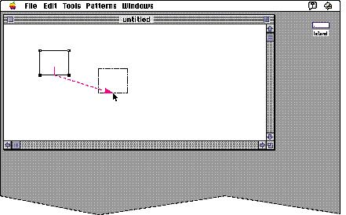

|
Modifier KeysModifier keys are those that alter the way other keystrokes are interpreted. These keys sometimes affect the way the mouse-button actions are interpreted as well. They are the Shift, Caps Lock, Option, Command, and Control keys. Not all Macintosh keyboards contain all of these keys. It is important that you use these keys consistently from application to application, as outlined in these guidelines.ShiftThe Shift key, when held down at the same time a character key is pressed, produces the uppercase letter on alphabetic keys, or the upper character on two-character keys. The Shift key is also used in conjunction with the mouse for extending a selection or for constraining movement in graphics applications. For example, in some graphics applications holding down the Shift key while using a rectangle tool limits the tool to drawing squares.Caps LockThe Caps Lock key latches in the down position when pressed and releases when pressed again. (On PowerBook computers this key is a soft switch, so it doesn't latch.) Note that the Caps Lock key operates for Roman languages only; in other words, it works as described in this section for languages that include uppercase and lowercase letters. When down, it gives the uppercase letter on alphabetic keys. Caps Lock has the same effect on alphabetic keys that the Shift key has, but Caps Lock has no effect on any other keys. In other words, even when Caps Lock is down, the user must press the Shift key to produce the upper characters (#, ?, and so on) on the nonalphabetic keys.OptionThe Option key, when used in combination with other keys, produces aset of international characters and special symbols. For example, in many Macintosh fonts, Option-4 produces the symbol, Option-R produces ®, and Option-G produces ©. Shift and Option can be used together, in combination with a character key, to produce yet other symbols. For example, Option-Shift-? produces the Spanish � character. The Key Caps desk accessory lets the user preview these combinations in all available fonts. The Option key can also be used in conjunction with the mouse to modify the effect of a click or drag. For example, in some graphics applications, if the user selects an object and holds down the Option key while dragging the object, the application makes a copy of the object and moves it to wherever the user releases the mouse button. This example is illustrated in Figure 10-11. Figure 10-11 Using Option-drag to make a copy of an object  CommandThe Command key is labeled with a propeller (x) symbol and, on some keyboards, an Apple symbol (K) as well. Pressing a character key while holding down the Command key usually tells the application to interpret the key as a command, not as a character. These combinations are called keyboard equivalents, as described in Chapter 4, "Menus," in the section "Keyboard Equivalents" on page 101.In some applications, the Command key is used with other keys to provide special functions or shortcuts. For example, pressing Command-Shift-3 on a Macintosh saves a snapshot of the current screen on disk. The Command key can also be used in conjunction with the mouse to modify the effect of a click or drag. ControlThe Control key is used with terminal-emulation programs for Control-key sequences. For all other applications, it is reserved for shortcut key sequences that the user defines using a macro-key facility. |